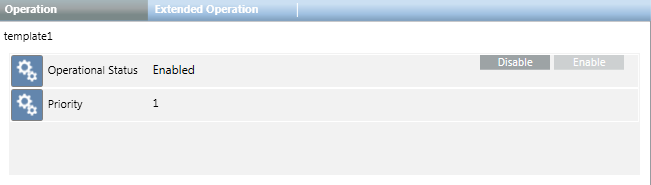
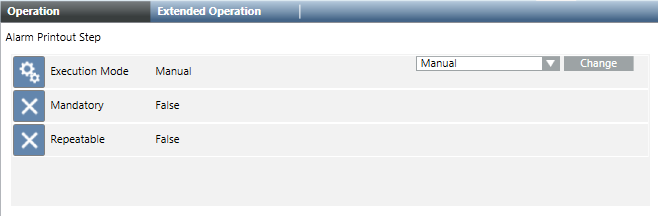

Properties and Commands of Operating Procedures and Steps
Properties and Commands of Operating Procedures
When you select an operating procedure, the Operation tab displays its properties and commands.

Property | Description | Commands |
Operational Status | Indicates whether the operating procedure is enabled (meaning it is available to be executed):
|
Operating procedures can be enabled/disabled from here or from the operating procedures list. For instructions, see Enabling or Disabling Operating Procedures. |
Priority | Indicates the priority according to which an operating procedure will be executed (lower numbers=higher priority). | The priority of the procedures can be modified from the operating procedures list (see Main Operating Procedures Folder Workspace) or the operating procedure workspace (see General Settings of an Operating Procedure |
Properties and Commands of Operating Procedure Steps
When you select an operating procedure step, the Operation tab displays its properties and commands.

Property | Description | Commands |
Execution Mode | Indicates whether this is launched manually by the operator (Manual), automatically as soon as the triggering event occurs (Automatic on Creation), or automatically as soon as the operator starts handling the triggering event (Automatic on First Treatment). |
The execution mode of a procedure step can be modified from here or from the procedure step workspace. See General Settings of a Procedure Step. |
Mandatory | Set whether this step is required to complete the procedure or can be skipped.
| - This parameter can be modified only from the procedure step workspace (see General Settings of a Procedure Step) or the operating procedure workspace (see General Settings of an Operating Procedure). |
Repeatable | Indicates whether the step can be done more than once during the same operating procedure.
| - This parameter can be modified only from the procedure step workspace (see General Settings of a Procedure Step) or the operating procedure workspace (see General Settings of an Operating Procedure). |